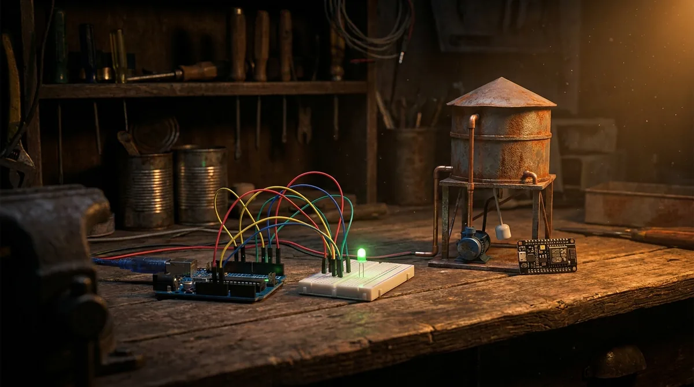

11 etapas
Do Ábaco à IA
Como pedras que a gente move viraram máquinas que conversam. Contar, instrumento, engrenagem, eletricidade, lógica, memória, miniaturização, rede e aprendizado: uma peça por episódio.
Séries · áudio pra ouvir, animação pra mexer
Cada série pega uma coisa que parece grande demais e monta ela do zero, uma peça de cada vez. Cada episódio traz uma peça, com áudio pra ouvir e uma animação pra mexer.
11 etapas
Como pedras que a gente move viraram máquinas que conversam. Contar, instrumento, engrenagem, eletricidade, lógica, memória, miniaturização, rede e aprendizado: uma peça por episódio.

14 etapas
Pedir pra uma IA ficou fácil; entender o que voltou é que não. Aqui a gente monta uma lista de tarefas do terminal até o ar (ambiente, git, teste, banco, deploy) pra que nada no seu código seja mágica. O princípio serve pra qualquer linguagem.

5 etapas
No simulador, sem comprar nada, a gente monta a caixa d'água que se cuida sozinha: sensor de nível, bomba, alarme, painel no computador, WiFi e, no fim, a placa própria. Arduino e ESP32 são o veículo; o princípio vale pra qualquer microcontrolador.
Em preparação
A próxima série, no mesmo método: o que foi preciso inventar, uma peça de cada vez, pra tirar uma pessoa do chão, levar ela até outro mundo e trazer de volta viva.
Em preparação
Uma peça por episódio, do mesmo jeito: o osso que sustenta, o músculo que puxa, o sangue que entrega, o nervo que avisa e o miolo que decide o que fazer com tudo isso.
Em preparação
Como uma bolha de gordura no fundo do mar virou tudo que está vivo. Sem salto e sem plano: cada peça nova nasce de uma que já existia e servia pra outra coisa.